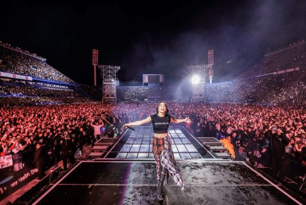
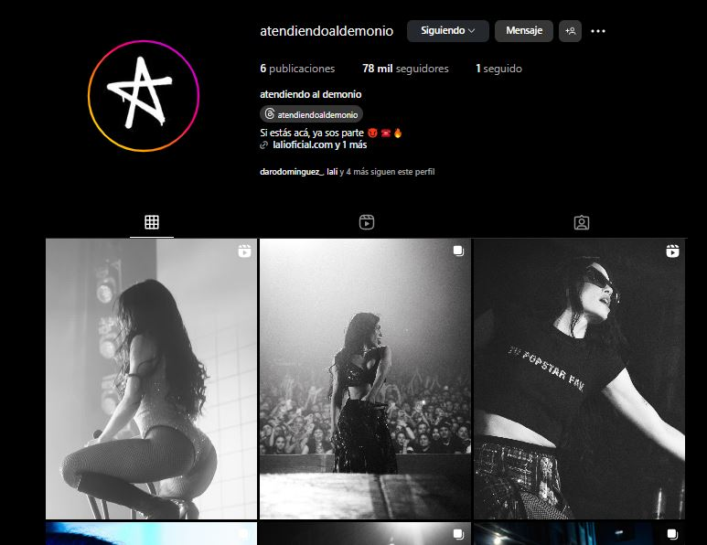

“Fue mi primer amor, platónico. Locura era de la Barra de Huracán. Crecí a cinco cuadras de la cancha y él era un personaje mítico del barrio, un bombonazo mal. Era un barra muy peligroso y a la vez muy amoroso. Muy personaje de barrio, si se tiene que cagar a trompadas se caga a trompadas y si tiene que defender a los suyos lo hace. Te generaba respeto y miedo al mismo tiempo. Moría de amor por él, para mí era Brad Pitt. Era precioso, todas estaban locas por él”, narró la artista sobre la cancion "Lokura" en Luzu TV, incluida en su último álbum..
Lali no solo lanzó una gira colosal basada en su nuevo disco, sino que generó un tsunami de demanda, llenando cuatro noches en Vélez y consolidando su lugar como ícono del pop nacional. Su show es una explosión de energía, invitadas de lujo, identidad sonora bien definida y una conexión auténtica con el público. Con un despliegue imponente, Lali marcó un hito en su carrera al presentar el show más impactante de su trayectoria ante más de 90.000 personas en el Estadio Vélez Sarsfield. La artista, con su inconfundible energía, dejó claro que su propuesta va mucho más allá de un simple concierto: es una experiencia que atraviesa generaciones y pone al pop argentino en un nuevo estándar de calidad y creatividad.
Lali lanzó un Instagram exclusivo para su gira Lali sorprendió a sus fans con la creación de una cuenta de Instagram exclusiva dedicada a su gira "LaliTour 2025". En este perfil especial, la artista comparte contenido inédito: fotos detrás de escena, momentos íntimos del equipo, videos en vivo, ensayos y detalles que no se ven en el escenario. Es una forma única de seguir de cerca cada paso del tour, vivirlo desde adentro y sentirse parte de la experiencia. Para quienes aman su música y su energía en vivo, esta cuenta es una joya imperdible.
